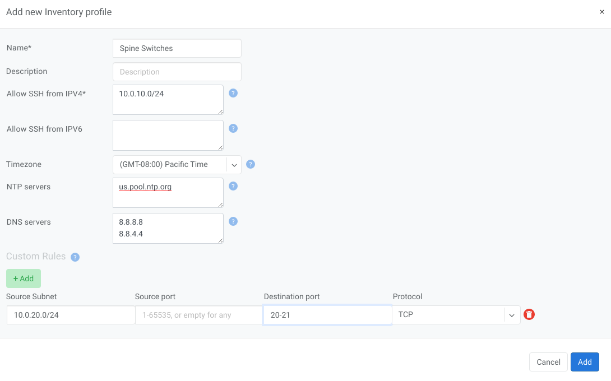

Inventory Profiles
Inventory profiles allow security hardening of inventory devices. By default all traffic flow destined to switch/softgate is allowed. As soon as the inventory profile is attached to a device it denies all traffic destined to the device except netris-defined and user-defined custom flows. Generated rules include:
SSH from user defined subnets
NTP from user defined ntp services
DNS from user defined DNS servers
Custom user defined rules
Name |
Profile name |
Description |
Free text description |
Allow SSH from IPv4 |
List of IPv4 subnets allowed to ssh (one address per line) |
Allow SSH from IPv6 |
List of IPv6 subnets allowed to ssh (one address per line) |
Timezone |
Devices using this inventory profile will adjust their system time to the selected timezone. |
NTP servers |
List of domain names or IP addresses of NTP servers (one address per line). You can use your Netris Controller address as an NTP server for your switches and SoftGate. |
DNS servers |
List of IP addresses of DNS servers (one address per line). You can use your Netris Controller address as a DNS server for your switches and SoftGate. |
Example: In this example Netris Controller is used to provide NTP and DNS services to the switches (common setup).
